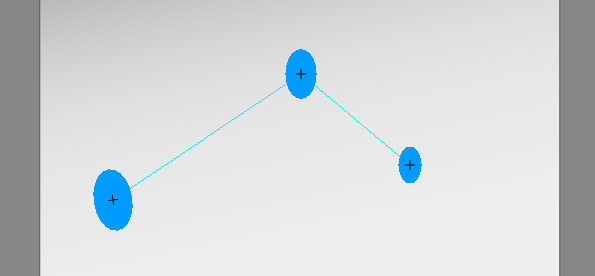
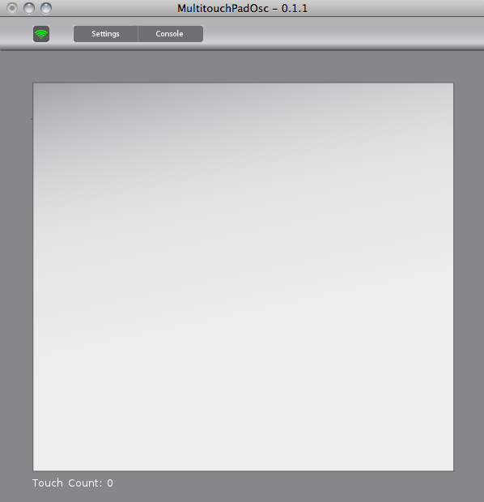

Table of Content
1.0 Overview 2.0 Multitouch and osc 3.0 Settings 4.0 Console
1.0 Overview
If you start first time the Application you see this window.
NAME/FINGER-ID/frame # return the current frame. NAME/FINGER-ID/x # return the x value of the finger. NAME/FINGER-ID/y # return the y value of the finger. NAME/FINGER-ID/size # return the size of the finger. NAME/FINGER-ID/angle # return the angle of the finger. # Here you can find a description for NAME and FINGER # # # NAME: Set a name for your. # You can change the device name at the settings.xml file. # # FINGER-ID: The finger id (from 0 to 20). # Actually the application use 20 Touchpoints.
This example is based on oscP5 Library example
/**
* This example shows how toreceive osc messages from
* Magic Trackpad. It will draw a ellipse with values from
* received x-, y position and size.
*
* Based on oscP5sendreceive by andreas schlegel
* oscP5 website at http://www.sojamo.de/oscP5
*/
import oscP5.*;
import netP5.*;
OscP5 oscP5;
NetAddress myRemoteLocation;
boolean oscIn;
float x, y, diam;
void setup() {
size(400,400);
smooth();
frameRate(25);
/* start oscP5, listening for incoming messages at port 12000 */
oscP5 = new OscP5(this,9000);
/* myRemoteLocation is a NetAddress. a NetAddress takes 2 parameters,
* an ip address and a port number. myRemoteLocation is used as parameter in
* oscP5.send() when sending osc packets to another computer, device,
* application. usage see below. for testing purposes the listening port
* and the port of the remote location address are the same, hence you will
* send messages back to this sketch.
*/
myRemoteLocation = new NetAddress("192.168.178.110",9000);
}
void draw() {
background(255);
noStroke();
fill(#00A8FA);
ellipse(x, y, diam, diam);
}
void mousePressed() {
/* in the following different ways of creating osc messages are shown by example */
OscMessage myMessage = new OscMessage("/test");
myMessage.add(123); /* add an int to the osc message */
/* send the message */
oscP5.send(myMessage, myRemoteLocation);
}
/* incoming osc message are forwarded to the oscEvent method. */
void oscEvent(OscMessage theOscMessage) {
/* print the address pattern and the typetag of the received OscMessage */
/*print("### received an osc message.");
print(" addrpattern: "+theOscMessage.addrPattern());
println(" typetag: "+theOscMessage.typetag());*/
for(int i=0; i<20; i++) {
if(theOscMessage.checkAddrPattern("mt1/"+i+"/size/") == true) {
if(theOscMessage.checkTypetag("f")) {
diam = theOscMessage.get(0).floatValue() * 50;
println(diam);
}
}
if(theOscMessage.checkAddrPattern("mt1/"+i+"/x/") == true) {
x = map(theOscMessage.get(0).floatValue(), 0, 1, 0, width);
}
if(theOscMessage.checkAddrPattern("mt1/"+i+"/y/") == true) {
y = map(theOscMessage.get(0).floatValue(), 1, 0, 0, height);
println("Position x:"+x+", y: "+y);
}
}
}